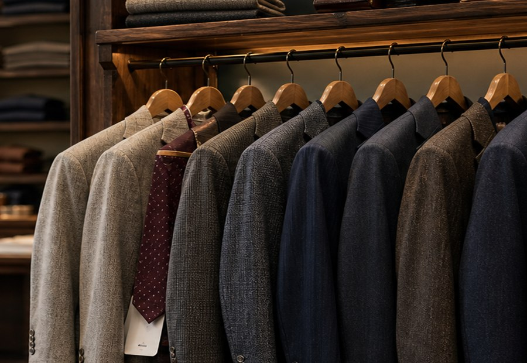
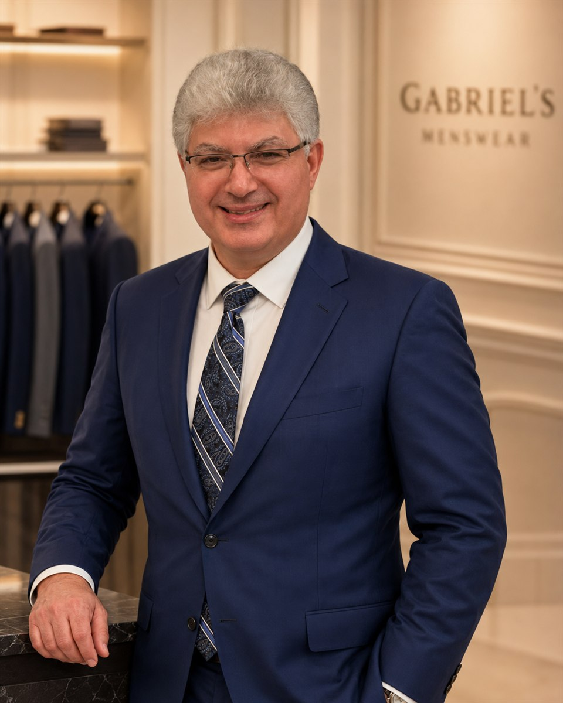

Suits for the day
Wedding, prom, funeral, interview, or work. The look should match the moment.
Suits, fittings, and alterations in Holden
Come in for the occasion. Leave with the fit, alterations, and finishing details handled.
1363 Main St, Holden, MA · Walk in unsure. Gabriel will take it from there.
Menswear for weddings, prom, funerals, and work
No guessing through racks alone. Gabriel guides the suit, fit, and finishing pieces so the look comes together in the shop.

Wedding, prom, funeral, interview, or work. The look should match the moment.
Already have a suit? Gabriel can check sleeves, hems, waist, break, and balance.
Shirts, ties, pocket squares, jackets, vests, and details that pull it together.
Public reviews
Customers mention patient help, fair prices, quick fixes, and clear advice. Whether they need a last-minute shirt, funeral outfit, or alterations that fit, they are helped without feeling pressured.
Read public reviews★★★★★
“Kelly was a lifesaver”
Jason drove in from Boston for a wedding and needed a dress shirt and tie fast. Kelly at the shop measured him and found a match in time.
★★★★★
Derek needed a suit, shirt, tie, and belt. Kelly walked him through the options and kept the total below what he expected.
★★★★★
Dave bought a suit, sport coat, and shirt, then noted that the alterations were finished in three days and fit well.

Meet Gabriel
Gabriel learned tailoring from his mother in Turkey and has spent more than 30 years fitting suits, jackets, trousers, and formalwear for the moments people remember.
Bring in a suit you own or start fresh. Gabriel will check the shoulders, sleeves, waist, hem, and overall balance, then explain what can be fixed and what is worth doing.
From trouser break to jacket balance, Gabriel looks at the fit in person and catches the things a rack or online order cannot.
If alterations will help, he will show you why. If a garment is not worth the work, he will tell you before you spend the money.
Visit the Holden shop
Call or stop by Gabriel's Menswear in Holden. Gabriel Sr. will look at the fit, explain your options, and tell you what is worth doing.
Before you come in
Unsure about size, style, timing, or price? A fitting can answer that.
Yes. Walk in and tell Gabriel what the occasion is. He can guide the suit, fit, and finishing details from there.
Yes. Gabriel can check a suit you already own and tell you whether alterations are worth it before you spend money.
Yes. Gabriel can help with the look, fit, and alterations for the timeline you are working with.
Pricing depends on the garment, fabric, and work needed. You will know the options before committing.